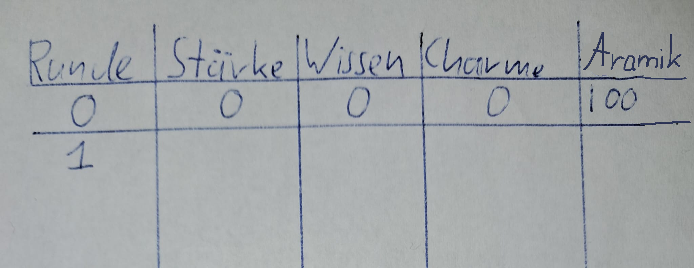

Alle Personen, die an dem Spiel teilnehmen wollen, sollten zusammen
an einem Tisch sitzen und die ausgedruckte Karte von Itreg vor sich
liegen haben.
Zudem sollte pro Person eine Spielfigur bereitliegen. Diese befinden
sich zum Spielstart alle in der Hafenstadt
Südstern.
Idealerweise liegen drei unterscheidbare Würfel (1–6) bereit. Mit einem
Würfel ist das Spiel jedoch auch spielbar.
Jede mitspielende Person sollte auf einem digitalen Endgerät folgende
Webseite geöffnet haben:
https://maneshlj.github.io/ITREG/
Zudem sollten alle Mitspielenden ein Blatt Papier bereithalten, um tabellarisch die eigene Figur zu tracken (siehe Figureneigenschaften).

Itreg ist ein würfelbasiertes Laufspiel. Dabei führen die Spielenden ihre Züge im Uhrzeigersinn aus. Die älteste Person beginnt und führt den ersten Zug durch.
Das Ziel des Spiels besteht darin, die Stadt Itreg (nordwestliche Ecke) als Erste*r zu erreichen und dort eine bestimmte Aktion auf dem Aktionsfeld durchzuführen. Wenn man gewonnen hat, wird das Spiel dies mitteilen.
| Name | Zeichen | Funktion |
|---|---|---|
| Zug | Zeigt die Laufrichtung an. Bei mehreren Feldern, die in der angezeigten Richtung liegen, darf die Spielfigur auf beide Felder gestellt werden. | |
| Zug (mit Wiedereinstieg) | Zug. Dient als Wiedereinstiegsfeld (siehe Ziehen). Zudem tragen manchen dieser Felder einen Namen, sind jedoch keine Aktionskarten. Man kann jedoch durch die Folgen von anderen Aktionskarten zu ihnen gebracht werden. | |
| Aktion-Zug | Zeigt die Laufrichtung an. Bei mehreren Feldern, die in der angezeigten Richtung liegen, darf die Spielfigur auf beide Felder gestellt werden. Wenn der Zug auf diesem Feld endet, muss die Aktionskarte gespielt werden. | |
| Aktion-Zug (mit Wiedereinstieg) | Aktion-Zug. Dient als Wiedereinstiegsfeld (siehe Ziehen). Wenn man von einer anderen Aktionskarte zu dem Ort dieser Aktionskarte gebracht wird. Wird die Figur, wenn vorhanden, auf das Feld mit Wiedereinstiegspunkt platziert. | |
| Aktion-Stopp | Wenn die Spielfigur exakt auf oder an diesem Feld vorbeiziehen würde, bleibt sie dort stehen und die restlichen Schritte verfallen. Die Aktionskarte muss gespielt werden. |
Jede spielende Person trackt die eigene Figur mithilfe einer Tabelle mit folgenden Spalten:
1.1. Du kannst dich zu Beginn jedes Zuges entscheiden, in die
Hafenstadt Südstern zurückzukehren.
Dabei verfallen alle anderen Handlungen deines Zuges.
2.1. Laufwürfel und Aramikwürfel gleichzeitig werfen.
2.2. Die Augenzahl des Aramikwürfels auf den Kontostand
addieren.
(Hinweis: Muss später mit der Aktionskarte verrechnet
werden.)
2.3. Befindet sich die Spielfigur auf einem Stoppfeld, darf nicht
gezogen werden
und die entsprechende Aktionskarte muss gespielt
werden.
2.4. Entscheiden, ob mit der Augenzahl des Laufwürfels gelaufen
oder stehen geblieben wird.
3.1. Die Spielfigur exakt um die Augenzahl des Laufwürfels
bewegen.
Die Richtung wird durch Pfeile auf den Spielfeldern angezeigt.
(Bei zwei Richtungen kann frei entschieden werden.)
Zieht die Spielfigur exakt auf ein Stoppfeld
oder würde sie an einem Stoppfeld vorbeiziehen,
bleibt sie dort stehen und die restlichen Schritte verfallen.
Befindet sich auf dem Zielfeld bereits eine andere Figur (Schlagen):
3.2. Befindet sich die Spielfigur nun auf einem blauen
Aktionsfeld,
muss die entsprechende Aktionskarte gespielt werden.
4.1. Öffne die Karte in der Übersicht
(https://maneshlj.github.io/ITREG/).
Außerhalb des Spielens einer Karte darf sie nicht geöffnet werden.
4.2. Alle Spielenden sollen mitbekommen, was geschieht:
4.3. Lies die Beschreibung der Karte (oberer Teil).
4.4. Lies nur die Vorderseite der Optionen (unterer Teil):
4.5. Du kannst dich entscheiden, einer deiner Fähigkeiten einen Punkt
hinzuzufügen.
Dafür musst du einer anderen Fähigkeit zwei Punkte abziehen.
4.6. Entscheide dich für eine Option und teile sie deinen Mitspielenden mit.
4.7. Würfle mit einem Würfel.
Du darfst so oft würfeln, wie oben rechts in der Kartenansicht angezeigt
(1–3).
Die höchste Augenzahl aller Würfe zählt.
4.8. Stelle fest, ob du die notwendige Fähigkeitsstärke aufbringen kannst:
4.9. Vergleiche mit den Anforderungen:
4.10. Positioniere deine Figur gemäß der Rückseite der Karte:
4.11. Notiere Veränderungen bei Fähigkeitspunkten und Aramik.
(Wichtig: Verrechnung mit dem Aramikwürfelertrag.)